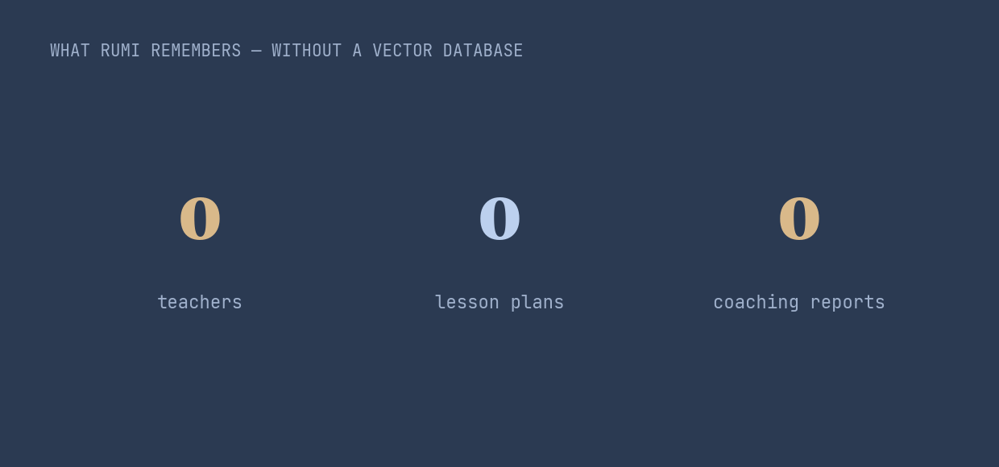

Every AI assistant on Earth has the same amnesia: it forgets you the moment the conversation ends. The standard cure is a thing called a vector database. Rumi serves thousands of teachers and never built one. Here's why.
An AI language model is, by default, forgetful. It reads your message, answers, and remembers nothing. Each conversation starts from zero. And it can only hold so much at once — a fixed "window" of text — so even within a chat, the oldest things slide out and are gone.
The industry's answer is nearly universal: take everything a user has ever said, convert it into thousands of numbers, store those in a vector database, and at each turn search for the "most similar" past snippets to paste back in. It's called retrieval-augmented generation, and as of 2026 it's the default plumbing of almost every AI product.
It works. But it's a whole second system to run, and it guesses — it fetches what looks similar, not necessarily what's true. For a teacher, "looks similar" isn't good enough. She doesn't want the lesson plan that resembles hers. She wants hers.
Most AI products try to remember everything, fuzzily. We chose to remember the right thing, exactly — and only when she asks.— How Rumi handles memory
The default the whole field reaches for — and the one Rumi chose instead.
No vector database. Just three honest rules.

Across 6,349 teachers and more than 20,000 lesson plans, Rumi's memory is just their real history, fetched precisely when they reach for it. No embeddings, no similarity search, no second system to keep alive. Easier to trust. Easier to debug. And it never hands a teacher someone else's lesson by mistake.
LIVE in production · May 2026